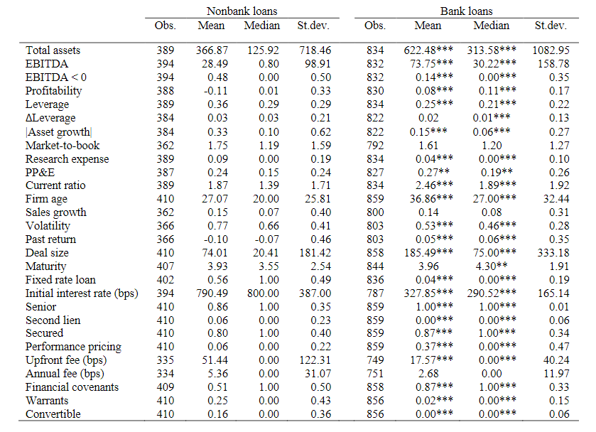
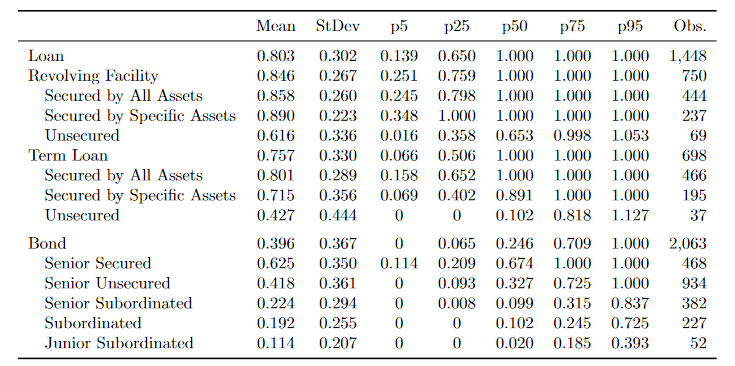
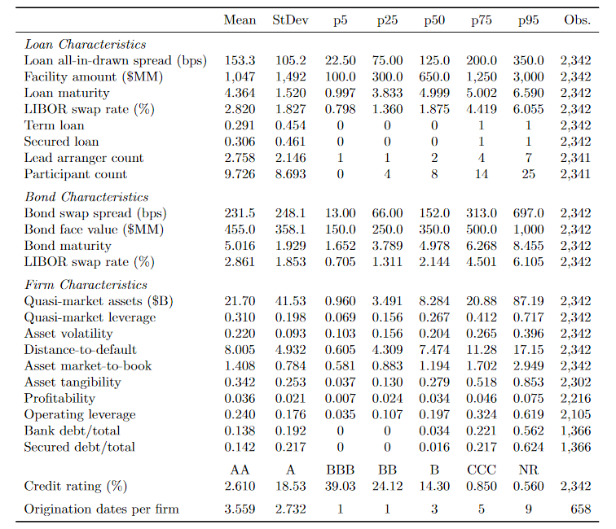
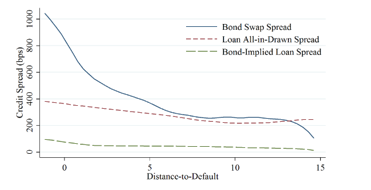
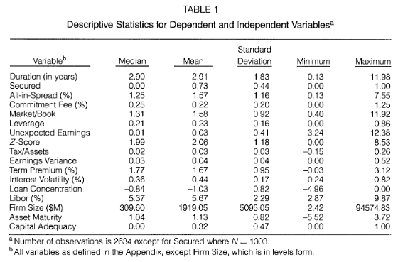
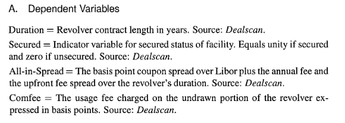

Are women better loan officers? (2009) by Thorsten Beck, Patrick Behr, Andre Güttler
-
Loans by female borrowers and borrowers screened and monitored by female loan officers are less likely to turn problematic.
-
We find that female loan officers experience a lower share of problem loans both in the case of male and of female borrowers.
-
The effects are much stronger and more robust for first loans than for subsequent loans to the same borrower.
-
Female loan officers are not better because they are more experienced. Female loan officers are, on average, roughly two years younger than their male counterparts.
Tentative conclusion
- Better performance of female loan officers is explained with better screening capacities on unobserved borrower characteristics (smell test) and/or better monitoring capacities.
Non-bank lending (2019) by Sergey Chernenko, Isil Erel, Robert Prilmeier
Bank and nonbank lenders may utilize different lending techniques and specialize in lending to different types of borrowers or to finance different types of projects.

Addition:
Does Borrowing from Banks Cost More than Borrowing from the Market? (2019) by Michael Schwert
-
This paper investigates the pricing of bank loans in a sample of new loans to firmswith outstanding bonds.
-
After accounting for seniority, banks earn an economically large interest rate premium relative to the price of credit risk in the bond market.
-
To establish this result, I use intuition from a reduced-form model of credit risk to show that average loan spreads are three times higher than implied by bond spreads and relative losses in default.
-
To quantify the premium at the loan level, I apply a structural model to a subsample of secured term loans and estimate an average loanpremium of 240 bps.
-
I rule out general mispricing of seniority, liquidity, fixed costs, and capital charges as drivers of the premium. My findings imply that firms place ahigh value on bank services other than the simple provision of debt capital.
Table 1: Summary Statistics on Loan and Bond Recovery Rates

Table 3: Summary Statistics: Full Bond-Loan Sample

Figure 2: Non-Parametric Regressions of Bond-Implied Loan Spreads on Distance-to-Default

Internet Appendix (see Support Information)
The Determinants of Contract Terms in Bank Revolving Credit Agreements by Steven Dennis, Debarshi Nandy, Ian G. Sharpe
We find strong interrelationships between contract terms:
- bi-directional relationship between duration and secured status
- bi-directional relationship between the all-in-spread and commitment fees
- unidirectional relationship from both duration and secured status to all-in-spread
 
Notes:
-
Melnik and Plaut (1986) characterize bank commitment contracts as providing a package of n-contract terms that cannot be split and traded separately.
-
"underinvestment problem", as in Determinants of Corporate Borrowing (1977) by SC Myers
See loan agreements (in Russian):
- КС ВТБ-Полюс
- КС PSB-Первоуральская
- КС ВТБ-Инград (файл в архиве)
Bank ownership, lending relationships and capital structure: Evidence from Spain (2019) by Carlos Fernández-Méndez and Victor M.González
-
Financial institutions control 35% of firms in Belgium, 30% in Sweden, 25% in Finland and Germany, 20% in Portugal, 15% in Spain and 10% in Argentina and Norway.
-
Shareholders prefer to assume higher risk than lenders, whereas lenders prefer firms to maximize the probability of repayment.
-
Hypothesis:
-
H1a: Banks stock ownership has a positive influence on debt and debt maturity and a negative effect on debt cost if the monitoring effect is prevalent. -
H1b: Banks stock ownership has a negative influence on debt and debt maturity and a positive effect on debt cost if the expropriation effect is prevalent.
-
Result:
- Debt maturity increases with bank ownership, whereas the cost of debt decreases with bank ownership.These results are consistent with the predominance of the monitoring effect over the expropriation effect.
Flow of funds (FoF)
Introductory notes:
- part of or extenstion of system of national accounts (link to SNA refresher):
gross savings = fixed cap investment + net lending + stat discrepancy - balance sheet (stock) and transaction (flows) tables
- sectors x instruments table ('2d'), sectors x instruments x sectors table ('3d')
- valuation at market prices (different view on book value in corporate reports)
closing stock = opening stock + flow + revaluation + other changes (eg. writeoff)

Expected takeaways:
- bank-based (loan) vs market-based (bonds) financial system
- size of corporate debt (loans and bonds)
- more debt instruments (several types of loans, trade credit)
- cautious about:
- nonfinancial sector net position
- equity valuation
- consolidation
- discussion on what is missing in FoF statistics and where to find it
Suggested reading (methodology): Development of financial sectoral accounts. New opportunities and challenges for supporting financial stability analysis by Bruno Tissot November 2016. BIS/IFC
Excercise
Excel file (links inside):
- US
- Euro area
- Japan
- Russia
Interactive example: UK
Sector-to-sector instrument matrix ('3d'), link
To discuss: how does chart below prove UK is an international finance center?
Bank statistics (Russia)
- Обзор банковского сектора
- На этой же странице - top 30 банков
- Формы отчетности 101, 102
- Менее важно: Статистика - Банковский сектор
Обзор:
Упражнение minibank.xlsx
Corporate reports (Russia)
Bank products
- Bank product = something a bank can charge for or attract funds with
- Provide capital (fund-based, balance sheet) or service (fee-based, operating expense), or both.
- Towards bank asset side:
- funded: loan/equity investment
- fee: loan syndication, bond issue
- Towards bank liability side:
- fee: current account
- fee: payments, cash management
- fee: asset/wealth management
- funded (source): deposits
- Securities-related
- trading income
- custodian ("депозитарный банк")
Readings:
Extra case:
- Should there be a minimum fee for a retail current account?
Types of loans and firm constraints
Loan types
From statistics we see just exposures at some date (eg. end of quarter).
Underlying contracts may vary in following dimnsions:
- Term/installment ("кредит") vs revolver (кредитная линия):
- fixed schedule and fixed amount (term loans)
- flexible schedule and capped amount(revolver, line of credit)
- Seniority (старшинство)
- secured, senoir/junior (has priority in bankruptcy),
- subordinated (priority in default and can count in capital calcultaion)
- Colateral (залог)
- pledge of specific assets as a repayment guarantee
- example: commercial business mortage
- Lender group
- single lender
- group of lenders (syndicated loans)
- transferable to other lender or not (CDO, collaterlised debt obligations)
- Linkage to specific activity or business segment
Current business:
- fixed asset investment
- working capital
- trade finance
- general corporate needs
Corporate restructuring:
- LBO (leveraged buyout)
- recapitalisation
Other purposes
- Covenants (ковенанты/дополнительные условия)
- example: convenant-lite loan
-
New origination or repayment of existing loans
-
Guarantees (off balance sheet):
- LOC (letter of credit)
- guarantee
Some dimensions may overlap or may compose, eg trade finance - has specific business segment and it has colateral (receivables or inventory).
See if our classification holds for:
- factoring
- leasing
- forfeiting
Types of loans and the Bank Lending Channel (2020) by Victoria Ivashina, Luc Laeven and Enrique Moral-Benito
PDF - can be downloaded (click Download PDF + lower right corner)
- Loan classification: asset-based loans, cash flow loans, trade finance and leasing
Firm credit constraints
Presentation here
Working paper here
- Asset-based vs cash-flow based lending
- Earnings-based constraint (EBC)
Commercial loans are typically organized in a package that shares the same covenants: the package commonly contains a revolving credit line, which can be asset-based (secured by inventory and receivable), and cash flow-based term loans. Thus the revolving lines are also associated with earnings-based covenantsalthough we categorize them into asset-based lending.
Loan covenants
What happens after covenant violation?
- withdrawal of line of credit
- require immediate repayment of principal
- require more collateral
- bankruptcy
- threat of the above
Suggested reading: An Overview of Covenants in Large Bank Loans by John K. Paglia (2002).
Sister article here.
Other links:
-
Syndicate Size and the Choice of Covenants in Debt Contracts
-
Role, Structure, and Determinants of Debt Covenants: Evidence from Japan
-
Financial Shocks and Corporate Investment Activity: The Role of Financial Covenants
For discussion: why do low covenant (cov-lite) loans emerge?


For discussion: why EBITDA definition matters in a loan agreement?
EBITDA addbacks. Borrowers and sponsors continue to obtain friendly EBITDA adjustments. Since most covenant compliance, grower baskets, and potentially pricing are determined by reference to EBITDA, this issue has become heavily negotiated. Current borrower-friendly trends to EBITDA adjustments include:
- permitting projected cost-savings not connected to acquisitions or reorganizations,
- increased or removal of caps on pro forma cost-savings synergies,
- longer look-forward periods,
- board expenses, severance and relocation costs,
- synergies “of a type” shown in a sponsor’s QOE report,
- accrued dividends on preferred stock,
- expenses due to exercise of employee options,
- indemnification payments that are reimbursable by third parties, and others.
Contractual Complexity in Debt Agreements: The Case of EBITDA
We use the two most common financial covenants that appear in the Dealscan database, maximum debt-to EBITDA ratio and the minimum interest coverage ratio (EBITDA/interest expense), as well as two other covenants that feature EBITDA (minimum debt service coverage and minimum EBITDA).
More precisely, for each of the following seven adjustments to EBITDA, we coded (0 or 1) whether it was included in the definition:
- Non-cash charges
- Cash charges for extraordinary or non-recurring items
- Cash charges for restructuring
- Projected cost savings from synergies, restructurings, etc.
- Management/advisory fees payable to sponsor
- Fees and expenses related to acquisitions, investments, equity or debt issuances, etc.
- Miscellaneous additional addbacks
Conclusions
Becker and Ivashina (2016) show that 70 percent of leveraged loans issued in 2015 lacked traditional financial covenants and argue that the rise of these covenant light, or “cov-lite”,loans is driven by the influx of non-traditional lenders with high renegotiation costs, such as CLOs and mutual funds. Policymakers and the business press alike have highlighted the potential danger of such loans. Indeed, the Federal Reserve issued supervisory guidance in March 2013 on highly-leveraged loans and Bloomberg recently speculated that weak protections in these loans might lead to the next crisis.
source: Losing Control?The 20-Year Decline in Loan Covenant Restrictions
This is happening here
Bank reports
- List of of G-SIBs
- List of national systematically important banks (Russia)
Things to look for (tentative):
-
interest and non-interest revenues
-
business segments (SME, corporate, global)
-
corporate debt exposure
-
NPL, grades
-
reserves, cost of risk
-
required capital
Santander
Deutsche bank
- Annual report attn. p 295
Nordea
Non-bank data
Final project
(for discussion)
Data-intensive / computational - can you handle it?
Core tasks:
- create and simulate a loan portfolio
- use both data on companies and data on banks to calibrate
- add heterogenity to loan terms
- perform a stress test
- report results
Additional:
- suggest early warning indicators for default
- make a simple loan pricing mechanism
Literature
From syllabus
...
Large reports on syndication
- A Guide to the Loan Market (US)
- LCD Premier, 2017
- EU loan syndicationon competitionand its impactin credit markets
US yields, defaults, duration
Study framework

Bank processes:
- loan origination
- pricing
- approval/rejection
- monitoring
- risk assessment
- bad loan resolution
Notes
Day 1
Personal intro
- 10 years 10 months work experience in corporate lending (strategy/macro)
- PhD Econ Russian Academy of Sciences, visiting research London Business School
- In banking - focus on development banks, public policy and macro
- Interested in IT infrastructure, clean code, reproducible research
My website and contacts: https://epogrebnyak.github.io/cv
Why corporate banking matters
- large part of flow of funds
- can do complex deals
- first to feel the stress, last to turn the lights off
- rich history of failures
Starting view
- firms borrow to finance current assets and fixed investment
- simple term contract
- banks know loan quality at all stages
- credit risk reflected in reserves (IFRS 9)
- capital covers expected losses (Basel)
Тезисы
- Реальные потребности бизнеса сложнее, чем финансирование оборотного капитала, инвестиций или выдача гарантий
- Усложнение регулирования вытесняет мелкие банки и создает видимость занятости и спокойствия для регуляторов
- Качественных данных хронически не хватет, банкам нужно принимать решения даже без таких данных
- Возможности "управления", в отличие от "анализа" кредитных рисков достаточно ограничены
- Структура кредитных соглашений часто очень сложная
- Банки постоянно влезают в кредитование дефолтных заемщиков (маржа, ограниченное
число проектов) - Ключевая функции банка - влиять на поведение корпоративного заемщика
Сложности изучения
- неопределенность мотиваций - куда с этим идти
- специальная терминология и жаргон
- нет открытых данных по кредитам
- данные низкочастотные
- проблема "что делать дальше" с хорошими аналитическими результатами (видео)
Цитата
Даже если вы прогнозируете что-то со 100% точностью, сам прогноз не зарабатывает никаких денег.
Константин Короткий, сооснователь Data Nerds, https://youtu.be/BujPXw6U84o?t=2819
Day 2
Plan for today (17/03/202):
Org:
- Changes in course - work remote
- Rehearse syllabus
- Discuss/present previous homework
- Discuss final project:
Homework:
- Flow of funds (Excel)
- Mini-bank worksheet (Excel)
- Reading
Statistics:
- Flow of funds (home assignment) - (15, 17) / 198
- Links to bank statistics
Loans:
- Reading in IMF report
- Loan types
- Covenants
- Loan pricing
- Datasets
Companies:
Banks:
- "Mini-bank": refresher on bank accounting and home assignment.
- Future homework (bank analysis cases)
Next:
- Banks / Basel / bank stats
- DCF models (invited)
Glossary
- IFRS 9 (ru: МСФО 9)
- IRB (ru: ВПОДК - внутренние процедуры оценки достаточности капитала)
- DSCR, debt service coverage ration
- PD
- EAD
- LGD
- disbursement
- NPL, non-performing loans
- cost of risk, CoR (syn: cost of credit)
Speciality terms
- Revolver - an unfunded commitment that the borrower may drawdown, repay and reborrow under.
- Story credit – unitranche facility for a company that historically was subject to a financial restructuring or another financial difficulty and as a result there is a higher (real or perceived) risk associated with this investment.
- Middle market loans - made to smaller companies, typical loan size < $150 million.
Datasets
- long-running series
- classified is 5-10% of exposure
- break in series (20 to 100 usd mln threshold)
- example of use of confidential part of data The Loan Covenant Channel: How Bank Health Transmits to the Real Economy Gabriel by Chodorow-Reich and Antonio Falato
EBRD - loan and equity investment dataset
Наборы данных
- flow of funds (большое или маленькое, бонды/кредиты)
- бухотчетность компаний
boo - счета 101, 102 формы
Кейсы в работе
- EBA Transparency excercise
- Survey of lending conditions
- Мечел
- iHeart
- подборка кредитных соглашений
- упражнения для бухучета в банке
- banks franchise value
- ttid, chartbook
Цифры показывают, что такого резкого падения не было с 2008 года. И это будет иметь последствия в реальной жизни. Балансы предприятий резко сократятся, а банки начнут отзывать кредиты или требовать дополнительное обеспечение. Предприятия, которые финансируют себя выпуском облигаций, больше не смогут это делать.